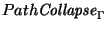
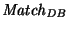
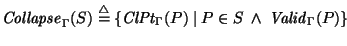

In this section, the

operation introduced in Section 3.2.1 is trivially generalized to collapse every path in a set of paths. Typically,
first chooses a set of paths that match some regular expression, then the paths are collapsed, and a property is coalesced from the collapsed paths.
[ ]
A set of paths, S, is collapsed by collapsing each path independently.

`2
The utility of an operation like Collapse has been investigated in other semistructured query languages where it has been called ``pull-up'' [1]. In Lorel, Collapse is not an operation at the query language level; rather, it is used in the implementation to compute the value of a path variable.